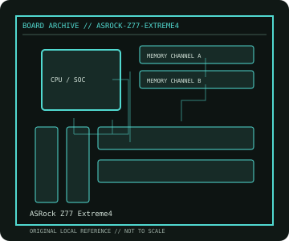

[ INDIVIDUAL COMPONENT // MOTHERBOARDS ]
ASRock Z77 Extreme4
Intel Ivy Bridge / Sandy Bridge desktop platform, 2012. This record documents the named model and its documented variants; confirm the PCB revision, submodel and firmware on the physical unit.

REVISION WARNING: Similar model names and PCB revisions may have different processors, connectors or firmware. Read the silkscreen and assembly code; use the support files for that exact board variant.
Specifications
| Catalog subcategory | Enthusiast Intel platforms |
|---|---|
| Exact model / era | ASRock Z77 Extreme4 — Intel Ivy Bridge / Sandy Bridge desktop platform, 2012 |
| CPU and socket / SoC | LGA1155 Intel Core i7/i5/i3, Pentium and Celeron processors; CPU generation and stepping must appear in ASRock support list |
| Chipset / platform | Intel Z77 Express |
| Memory | Four DDR3 DIMM slots, dual-channel, up to 32 GB in the specification; memory rate depends on CPU and XMP |
| Slots and connectivity | ATX; three PCIe x16-length slots with lane sharing, two PCIe x1 and two PCI; two SATA 6 Gb/s and four SATA 3 Gb/s, one eSATA, USB 3.0, Gigabit LAN |
| Firmware | ASRock UEFI; check Ivy Bridge CPU minimum BIOS and apply the correct model's update instructions. |
Compatibility and revision notes
PCIe 3.0 is CPU-dependent and shared when multiple slots are occupied. The board accepts DDR3, not DDR4, and its two x16-length slots do not both operate at x16.
Socket, connector shape and family branding alone do not establish compatibility. Verify the exact processor list, minimum BIOS, memory population table, power input, dimensions, and shared-lane behavior in the cited manual before installation.
Preservation and repair
Inspect LGA1155 socket pins, SATA connectors and the VRM heatsink. Use the UEFI clear-CMOS procedure and note shared SATA/USB headers before board removal.
For archival preservation, photograph the PCB, labels, connectors and included accessories before cleaning. Record serial/date codes, firmware versions, known faults, prior repairs and test conditions; use ESD-safe handling and do not power a board with loose conductive hardware beneath it.
Sources & further reading
- ASRock Z77 Extreme4 — product/manual referenceModel-specific platform, board layout and interface reference.
- ASRock Z77 Extreme4 — support and firmware resourcesSupport documentation; match the PCB revision, CPU support list and firmware release to the physical board.
Manufacturer/model documentation is the primary reference. Where vendor support is archived, match its revision notes to the board and do not cross-flash firmware from a similar product.